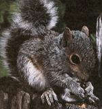
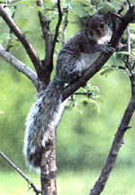

There are a good many reasons why squirrels are among the most hunted animals in North America. For one thing, the bushytail season usually opens before those for larger animals do, and provides an excuse to enjoy the early-autumn woods. Then too, squirrels are more numerous than any other huntable animal except possibly rabbits. Because of this, productive woods are often accessible to youngsters who have to be able to reach their hunting areas by foot. The weapons used for squirrel hunting-and the skills required-also demand less of an investment on the part of beginners, be they young or old. And, finally, squirrel meat has been recognized as a delicious food since long before the first Europeans settled on our shores.
The best way to locate a good squirrel woods is simply to be in the country-hiking, camping, or fishing-before the season begins. Listen for the barks and chatters of those often vocal animals, and keep your eyes peeled for nests and for the gnawed nut shells, pinecones, corncobs, or fungi that indicate squirrels have been feeding.
Once you've located a spot and the season opens (in some parts of the country, squirrels are fair game year-round), your hunt can be as simple or as complicated as you'd like. The back-to-basics approach is simply to dress in comfortable clothes (with a blaze orange vest, in orange camouflage pattern if you prefer, for safety) and set yourself down in a likely-looking grove of trees. The early- to mid-morning and mid- to late-afternoon hours are often the most productive. (Be sure to get permission to hunt if the woods are on private land.)
Most squirrel hunters use either a .22 rifle or a shotgun. If you choose the latter, which will make it possible to shoot running animals, I'd recommend nothing smaller than No. 6 shot. Despite their size, squirrels are hard to kill; for that reason, hunters using a .22 should never shoot at a moving animal, and should always use hard-hitting hollow-point bullets. To do otherwise is to risk watching a wounded animal escape. In any hunting you owe it to your quarry not to shoot unless you're confident of a quick, clean kill.
A variation of the sit-and-wait technique is still-hunting, which involves moving slowly and quietly through the woods, stopping in likely spots for up to half an hour at a time, and keeping your eyes and ears peeled.
Or if you want to get complicated, you can use a call to locate your game, or even invest in a trained squirrel dog (called a feist dog in the South), which will tree squirrels and circle the tree to force a hidden animal to give its position away.
Whatever method you use, keep in mind that a hunted squirrel can remain motionless, and all but invisible, for hours at a time. If you find yourself searching fruitlessly for a squirrel that suddenly disappears, you can follow several courses of action. First, if there's any breeze, look for the movement of blowing fur rather than trying to spot the whole animal. Or if you're with a friend, one of you can sit still while the other circles the tree noisily, perhaps causing the squirrel to move around the trunk to keep the tree between it and the more obvious hunter. If alone, you can try hanging your coat from a limb in view of the tree, then circling the trunk yourself. In fleeing you, the animal may think it's exposed itself to another hunter (the coat), and scoot into your view. Or, finally, you can just plunk yourself down and try to wait the squirrel out. It might take a long time, and you might even run out of day before that squirrel shows itself, but if you've never spent an afternoon sitting motionless in the woods, I can guarantee that you'll see and hear things that are every bit as rewarding as bringing a squirrel home for the pot!
|
 Scraps of shell, etc., found beneath feeding stations can often be seen during summer hikes, and are good evidence of an active squirrel population. |
 Once alerted, a squirrel can remain motionless for long periods. |
|